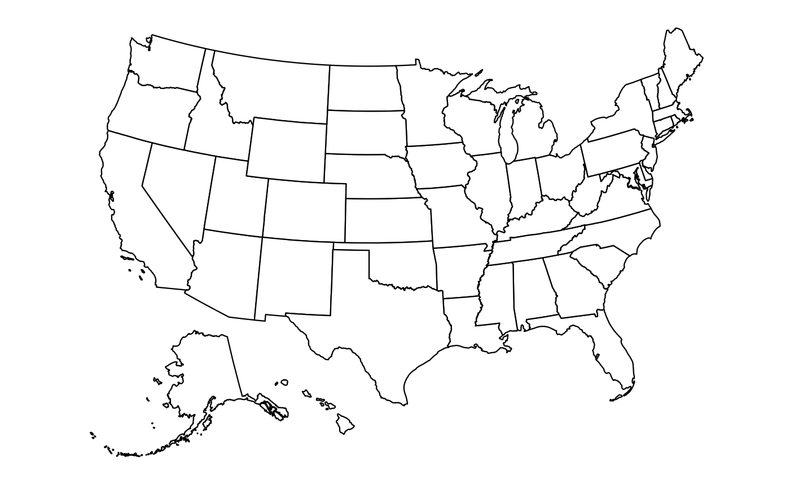
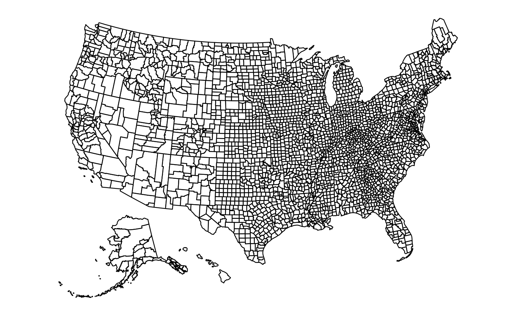
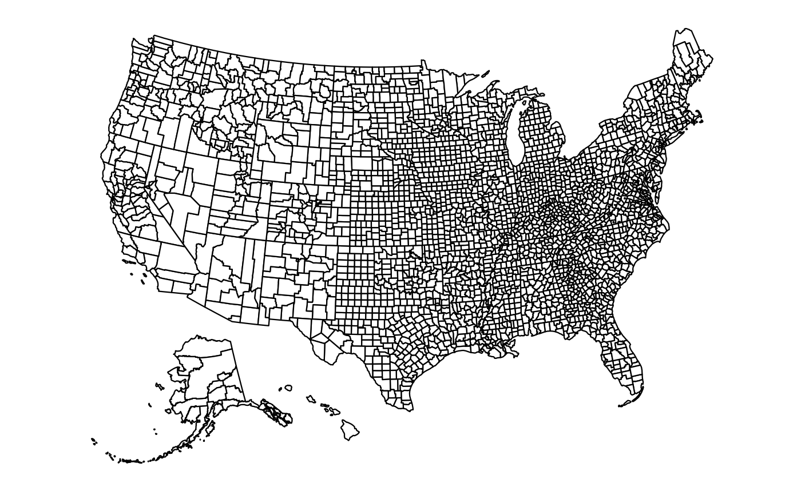
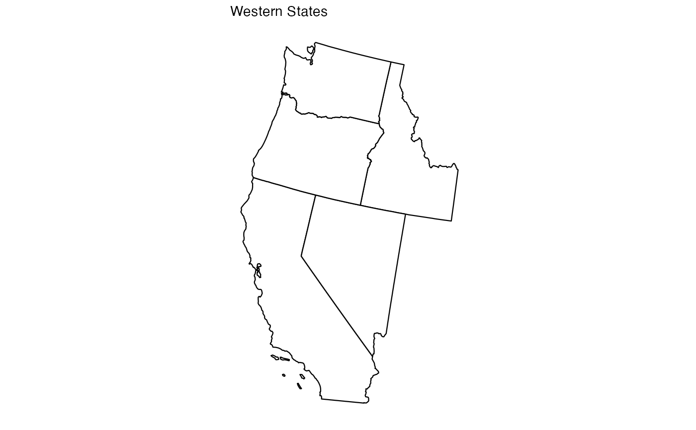
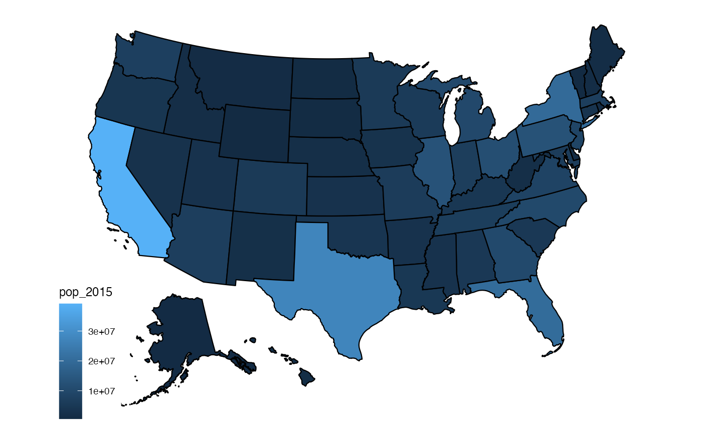
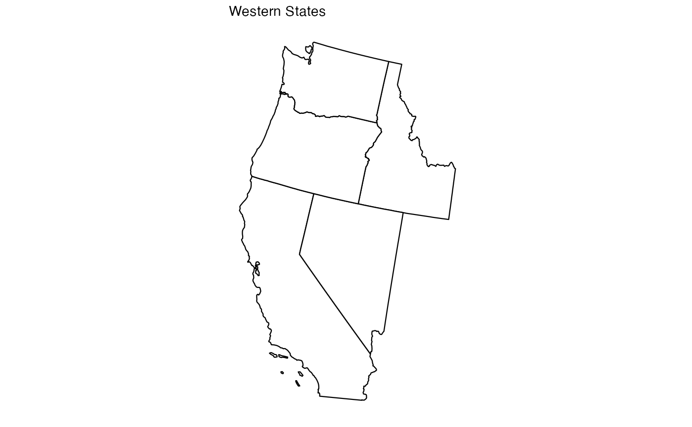
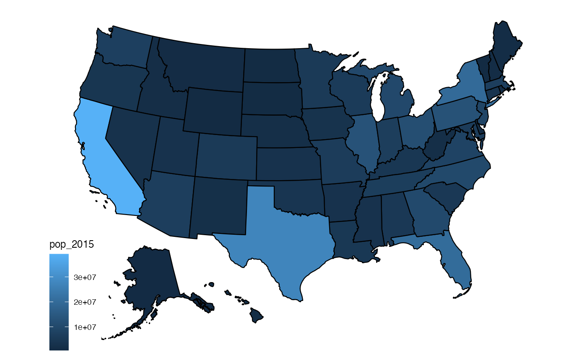
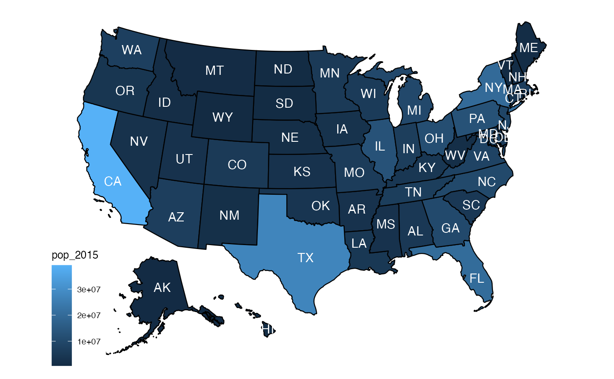
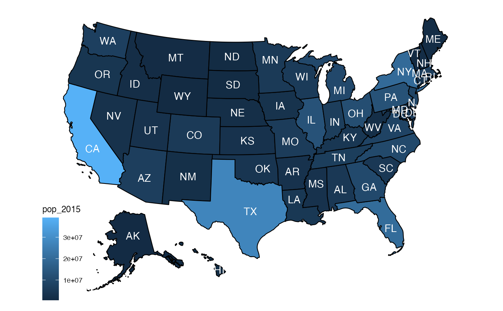

Conveniently plot basic US map
Usage
plot_usmap(
regions = c("states", "state", "counties", "county"),
include = c(),
exclude = c(),
data = data.frame(),
values = "values",
theme = theme_map(),
labels = FALSE,
label_color = "black",
...
)Arguments
- regions
The region breakdown for the map, can be one of (
"states","state","counties","county"). The default is"states".- include
The regions to include in the resulting map. If
regionsis"states"/"state", the value can be either a state name, abbreviation or FIPS code. For counties, the FIPS must be provided as there can be multiple counties with the same name. If states are provided in the county map, only counties in the included states will be returned.- exclude
The regions to exclude in the resulting map. If
regionsis"states"/"state", the value can be either a state name, abbreviation or FIPS code. For counties, the FIPS must be provided as there can be multiple counties with the same name. The regions listed in theincludeparameter are applied first and theexcluderegions are then removed from the resulting map. Any excluded regions not present in the included regions will be ignored.- data
A data frame containing values to plot on the map. This parameter should be a data frame consisting of two columns, a fips code (2 characters for state, 5 characters for county) and the value that should be associated with that region. The columns of
datamust befipsorstateand the value of thevaluesparameter.- values
The name of the column that contains the values to be associated with a given region. The default is
"value".- theme
The theme that should be used for plotting the map. The default is
theme_mapfrom ggthemes.- labels
Whether or not to display labels on the map. Labels are not displayed by default. For now, labels only work for state maps. County labels may be added in the future.
- label_color
The color of the labels to display. Corresponds to the
coloroption in theaesmapping. The default is"black". Click here for more color options.- ...
Other arguments to pass to
ggplot2::aes(). These are often aesthetics, used to set an aesthetic to a fixed value, likecolor = "red"orsize = 3. They affect the appearance of the polygons used to render the map (for example fill color, line color, line thickness, etc.). If any ofcolor/colour,fill, orsizeare not specified they are set to their default values ofcolor="black",fill="white", andsize=0.4.
Value
A ggplot object that contains a basic
US map with the described parameters. Since the result is a ggplot
object, it can be extended with more geom layers, scales, labels,
themes, etc.
Examples
plot_usmap()

plot_usmap(regions = "states")
 plot_usmap(regions = "counties")

plot_usmap(regions = "state")
plot_usmap(regions = "counties")

plot_usmap(regions = "state")
 plot_usmap(regions = "county")
plot_usmap(regions = "county")
 # Output is ggplot object so it can be extended
# with any number of ggplot layers
library(ggplot2)
plot_usmap(include = c("CA", "NV", "ID", "OR", "WA")) +
labs(title = "Western States")

# Color maps with data
plot_usmap(data = statepop, values = "pop_2015")

# Include labels on map (e.g. state abbreviations)
plot_usmap(data = statepop, values = "pop_2015", labels = TRUE)
# Output is ggplot object so it can be extended
# with any number of ggplot layers
library(ggplot2)
plot_usmap(include = c("CA", "NV", "ID", "OR", "WA")) +
labs(title = "Western States")

# Color maps with data
plot_usmap(data = statepop, values = "pop_2015")

# Include labels on map (e.g. state abbreviations)
plot_usmap(data = statepop, values = "pop_2015", labels = TRUE)
 # Choose color for labels
plot_usmap(data = statepop, values = "pop_2015", labels = TRUE, label_color = "white")

# Choose color for labels
plot_usmap(data = statepop, values = "pop_2015", labels = TRUE, label_color = "white")
